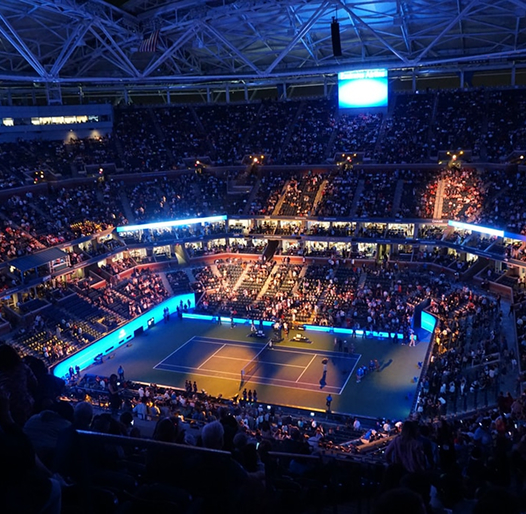

Фото кортів
Детальніше про клуб

Київський тенісний клуб “Racquet”
Київський тенісний клуб — це сучасний спортивно-оздоровчий комплекс, створений для всіх шанувальників активного способу життя, якісного сервісу та великого тенісу. Наша мета — забезпечити ідеальні умови для тренувань як досвідченим спортсменам, так і початківцям будь-якого віку. Серцем клубу є професійні майданчики трьох типів: ґрунтові корти, покриття зі штучної трави та закриті хард-корти. Завдяки наявності критих приміщень із системами опалення та клімат-контролю, гра триває цілий рік за будь-якої погоди, а сучасне освітлення гарантує відмінну видимість у будь-який час доби.
У клубі працює досвідчена команда сертифікованих тренерів, яка пропонує індивідуальні та групові програми, а також дитячу тенісну секцію. Для максимального комфорту відвідувачів передбачено зручні роздягальні, затишну зону відпочинку, прокат якісного інвентарю та сервіс із обслуговування ракеток. Окрім тренувального процесу, ми регулярно організовуємо любительські турніри та формуємо дружню клубну спільноту. На нашому сайті ви можете миттєво ознайомитися з розкладом, обрати тренера та забронювати корт онлайн у кілька кліків.
Правила
1. Загальні положення
Текстовий контент розділу загальних положень роботи тенісного клубу.
2. Основні визначення
Перелік термінів та визначень, що використовуються в даному регламенті.
3.1. ТК забезпечує Членам клубу:
- Разове відвідування.
- Абонементи з фіксованим часом.
- Абонементи на 30 и 50 годин.
- Індивідуальні заняття з тренером.
- «Клуб любителей тенниса».
- Дитячі групи різної вікової категорії и рівня підготовки.
- Дорослі групи.
3.2. Мінімальний час:
- Разове відвідування — 60 хвилин.
- Разове відвідування на літніх кортах — 55 хвилин.
- Абонементу — 30 годин.
- Індивідуальне заняття з тренером — 1 годину.
- Заняття з тренером в групах (дорослі/дитячі) — згідно з діючим розкладом.
3.3. Ігрова година згідно заявки (броні)
ТК надає ігровий час на підставі заявок (бронювання) Членів клубу з урахуванням розкладу роботи корту, проведення змагань, клубних заходів, проведення ремонтно-профілактичних робіт. Бронювання ігрового часу здійснюється через адміністратора ТК. Бронювання може здійснюватися безпосередньо в Комплексі або за телефоном.
3.4. ТК не несе відповідальності за збереження розкладу ігрового часу за Членом клубу після закінчення терміну дії абонемента, а також у разі порушення терміну оплати послуг.
3.5. Абонемент мають право купувати тільки Члени ТК. Купівля абонементів тренерами заборонена.
3.6. Скасування ігрового часу може здійснюватися не пізніше ніж за 24 години до початку заняття та відпрацьовуватися протягом сезону на рівноцінному часі або, за бажанням, на дорожчому, з доплатою. Не скасоване вчасно заняття вважається таким, що відбулося, і оплачується за поточним тарифом.
3.7. При проведенні змагань, Клубних заходів, технічних несправностях, що не дозволяють експлуатацію кортів, ТК має право вносити зміни до розкладу. При цьому ТК зобов'язується заздалегідь повідомити Члена клубу за телефоном про зміни в розкладі, а також надати можливість рівнозначно компенсувати пропущений ігровий час у зручний для Члена клубу час з урахуванням зайнятості кортів.
3.8. Компенсація (взаємно узгоджений рівноцінний ігровий час) для занять у ТК надається також у випадках:
- коли Член клубу заздалегідь (не менше ніж за добу) повідомив адміністратора ТК про неможливість відвідування заняття.
- несприятливих погодних умов для гри на відкритих кортах і неможливості надання закритого майданчика.
4. Оплата послуг
Інформація про тарифи, порядок розрахунків та способи оплати.
5. Правила поведінки на території та кортах
Правила техніки безпеки, дрес-коду та етикету на кортах.
6. Інші положення
Додаткові умови та прикінцеві положення клубу.